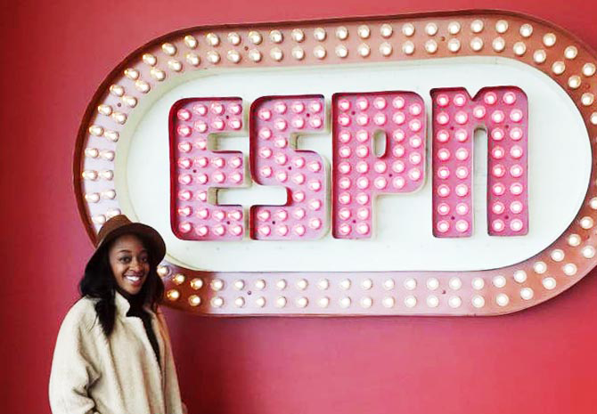
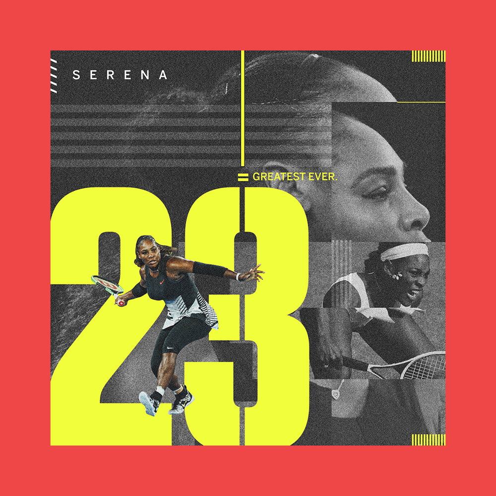
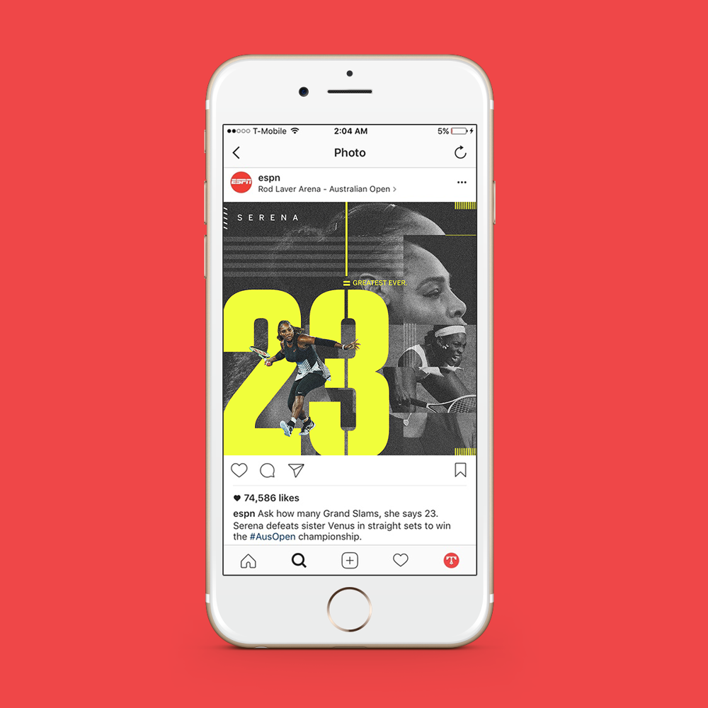
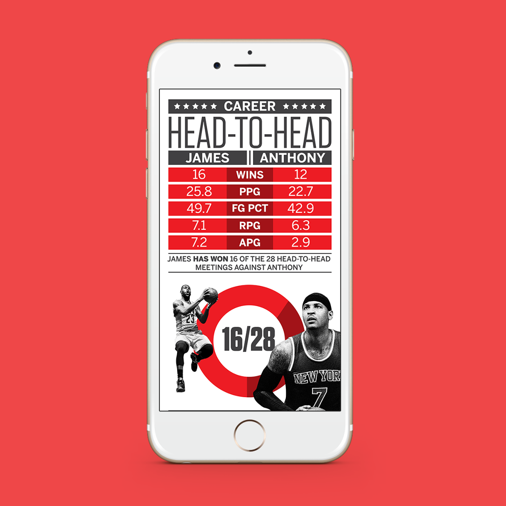
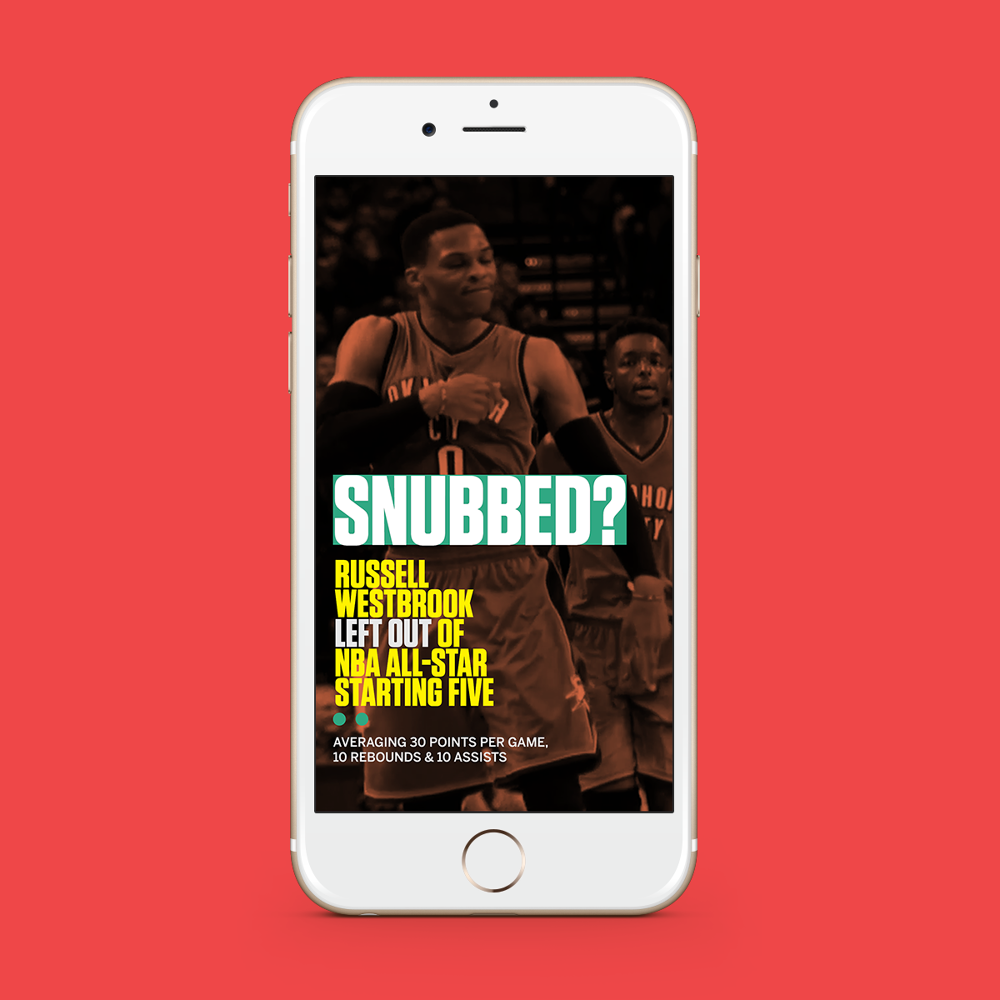
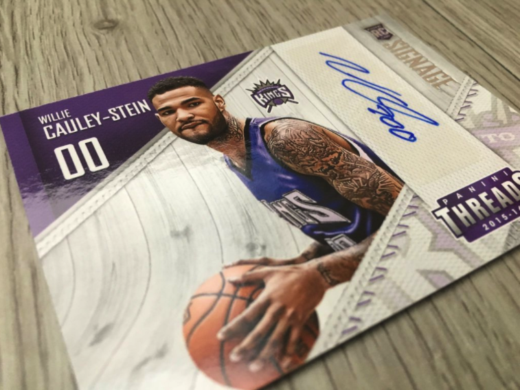

Short Bio
Growing up in a small town in Alabama, design was an unknown entity for me. Oddly, I always found myself admiring cover art and layouts in the magazine section of the local grocery stores. As faith would have it, the term graphic design was introduced to me by an article from an edition of Teen Vogue magazine. Years later, I found myself graduating from Auburn University with a degree in graphic design. Which would take me from the field of Jordan-Hare Stadium to a little trading card company outside of Dallas, Texas and finally to another small town named Bristol, Connecticut; home of ESPN.
The Small Town Girl
I am from a small town in Childersburg, Alabama; where sports are the only extracurricular activities for kids in the neighborhood. When people ask where I am from, I have to ask them if they know the basketball player Gerald Wallace because he is our town's claim to fame. I spent most of my childhood playing basketball which is where my love of sports derived from. I would volunteer to design my our class shirts and produced my senior class video.
Let's hear about your design work what have you produced?
Over the years I have produced a wide variety of work, some have been social content, some recruiting material targeted towards high school teenagers and I even had the opportunity to work on printed products for a professional trading card company. I would say working on social platforms is my favorite because it can communicate your message to millions of people with a click of a button.
 ... Is there anything that you are currently doing that people should know about?
My proudest accomplishment is not any design that I have executed, but my social handle and blog @Trenches_. I started it a few years back to provide an online source for designers and creatives in or interested in the sports industry. I would see beautiful designs on social media and in person and wonder who was responsible. Trenches provide a place for those designers to come out of hiding from their cubicles and connect with others in the industry. I connected with my current creative director after he followed the account on Twitter. It has connected with designers from Nike, NBA, NFL, New York Times, Snapchat, Wired and much more. It's my claim to fame.
Eveyone goes through ups and downs what are some issues you wrestle with?
Getting rejected is by far the biggest struggle of my career. I have applied for dozens of jobs that I did not get and that made me doubt myself as a designer. Design can be extremely subjective, so I had to learn just because one person dislikes your work does not make it bad. I can say that it also motivated me to improve and expand my skills set continually. I make it a point to learn new techniques and new programs as often as possible.
"Hard work beats talent when talent fails to work hard"
What are you doing that's sets you apart from you peers?
My favorite quote is "Hard work beats talent when talent fails to work hard" which is what I feel like sets me apart from my peers. I work twice as hard as the next designer; I do everything possible to put myself ahead of the game. Even if that means staying at work late after everyone has gone home to perfect a design.
What have your experience been as a person of color in the design industry.
I have always been the only African American when it has come to my design classes or jobs. It can be isolating, but for the most part, I have had the opportunity to work with some great people who make me feel included. Personally, it never hurts seeing someone that looks and speak like you. I would love to have more women and people of color in the industry.
There is a lack of knowledge in the importance of design. It can be more accommodating to the underrepresented population just by allowing them to be exposed to it.
How can design be more accommodating to underrepresented populations of people.
There is a lack of knowledge in the importance of design. It can be more accommodating to the underrepresented population just by allowing them to be exposed to it. I am a firm believer in knowledge being power. One cannot know what they cannot see.
What are you working on right now, either for work or for yourself?
I am currently working on a Super Bowl piece for our Snapchat Discover edition that compares the two quarterbacks statistics from the season.
Where do you see yourself in 5 or 10 years? Do you think you'll stay in design?
I love being a designer in the trenches, but in the future, I would like to take the role of a design influencer, creative director or producer. Sometimes you lose creative control working under creative and art directors, which is something that I sincerely desire. Also, I have always had the dream of working at Nike, so if I could end up there in the next ten years my life would be complete.
What advice would you give to folks from similar backgrounds who are in design or hoping to get into it?
It is not always about what you know, but who you know. The design world can be minuscule and inclusive. Making connections with people through social media and networking events can help you get your foot in the door. You may produce great work, but if no one knows your face or brand, it can be hard to break in the industry. Use social media as a tool to get eyes on your work. Do not be afraid to ask for feedback on your portfolio. It may be surprising, but my current and past creative directors use social media when they are looking to hiring or commission designs.
 Share on